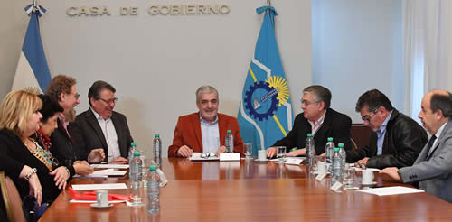
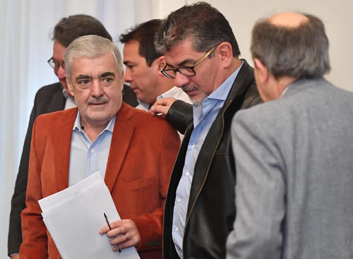

Real Chubut - Agencia de Noticias


Das Neves evaluó hoy con los legisladores nacionales las obras prioritarias para Chubut

Buscarán que se incluyan en el presupuesto nacional 2017
En ese marco se habló sobre las obras prioritarias para la provincia que deben ser incluidas en el próximo presupuesto nacional, próximio a ser debatido en el Congreso Nacional. También se analizó la posible eliminación de reembolsos por puertos patagónicos.
El gobernador del Chubut, Mario Das Neves, mantuvo esta mañana en la Sala de Situación de Casa de Gobierno una reunión con los distintos legisladores nacionales que representan a la provincia para hablar sobre las obras prioritarias que deben ser incluidas en el próximo presupuesto nacional, así como también se evaluó la posible eliminación de reembolsos por puertos patagónicos.
De dicho encuentro participaron los senadores nacionales, Alfredo Luenzo, de Chubut Somos Todos, y Mario Pais, del Frente para la Victoria; además de los diputados nacionales Nelly Lagoria, Jorge Taboada y Sixto Bermejo de Chubut Somos Todos y Ana Llanos del Frente para la Victoria.
Al respecto el senador de Chubut Somos Todos, Alfredo Luenzo, manifestó que "en esta reunión la idea era repasar todas las obras que están pendientes de realización en la provincia y así poder pelearlas en la conformación del presupuesto nacional para el año que viene".
En el mismo sentido, el legislador repasó que "existe una agenda de obras que ha marcado el gobernador Das Naves, que tiene un criterio unificado, y a partir de allí nosotros vamos a trabajar no solamente en las comisiones sino también en un diálogo mano a mano con el Ejecutivo Nacional para que ninguna de ellas quede sin presupuesto para el próximo año".
Asimismo, aclaró que "las obras que venimos reclamando son las ya conocidas por todos y que siguen pendientes de resolución como es el caso de las doble trocha en el tramo Trelew– Puerto Madryn o la de Comodoro Rivadavia – Rada Tilly, el camino de circunvalación en la ciudad petrolera".
"Las obras portuarias y aeroportuarias tanto en Puerto Madryn como en Comodoro Rivadavia, como así también tenemos la ruta que une Esquel con Trevelin, el acceso a Rio Pico y una gran cantidad de obras de saneamiento de las cuales debemos avanzar a lo largo del territorio provincial", detalló Luenzo
Por su parte, el diputado nacional de Chubut Somos Todos, Jorge Taboada, catalogó a la reunión "como muy buena porque nos permite acordar entre todos los participantes trabajar en conjunto para buscar incluir en el presupuesto nacional las obras que tienen que ver con el desarrollo de la Provincia".
Para finalizar, el senador nacional del FPV, Mario Pais, resaltó que "siempre es positivo mantener una reunión con el gobernador del Chubut, Mario Das Neves, porque tiene una visión de las necesidades de la Provincia, y en ese marco se está trabajando en la cuestión presupuestaria que preocupa permanentemente al Estado chubutense, porque son recursos que se pueden contar para la ejecución de la infraestructura en nuestro territorio".
Además destacó que "entre todos los legisladores hemos acordado poner a disposición todo nuestro esfuerzo en unificar tanto la gestión como los criterios, para alcanzar una sola voz en defensa de las obras que desde la Provincia se reclaman, las cuales deben estar incluidas en el presupuesto nacional como una adecuada respuesta a necesidades del pueblo chubutense".

Reembolsos a Puertos Patagónicos
A su vez, en este mismo encuentro se aprovechó para hablar sobre la posible eliminación de los reembolsos a las exportacioens por puertos patagónicos, donde todos los legisladores coincidieron en que es una medida que perjudica claramente a la provincia por lo cual "se va a dar pelea para que esto no se concrete".
En tal sentido, Luenzo remarcó que "no vamos a permitir que esta medida se concrete buscando resguardar por lo menos al sector de la pesca, que se ve perjudicada por una ley que pretende llevar adelante la provincia de Buenos Aires".
Mientras tanto, Taboada explicó que "de ninguna manera se puede sacar este beneficio, porque está claro que nosotros debemos tener una diferencia con Mar del Plata y Bahía Blanca si no quedamos en desigualdad, dado que los costos laborales de acá son mucho más altos".
Por último, Pais puntualizó que "hubo una coincidencia entre todos los legisladores en que debemos defender este beneficio para la Provincia y tratar de que Nación no lo derogue, sabiendo que esto nos da una ventaja competitiva a nuestros productos para que tengan una mayor actitud en el momento de ser exportados con una mejor rentabilidad".
PUBLICIDAD